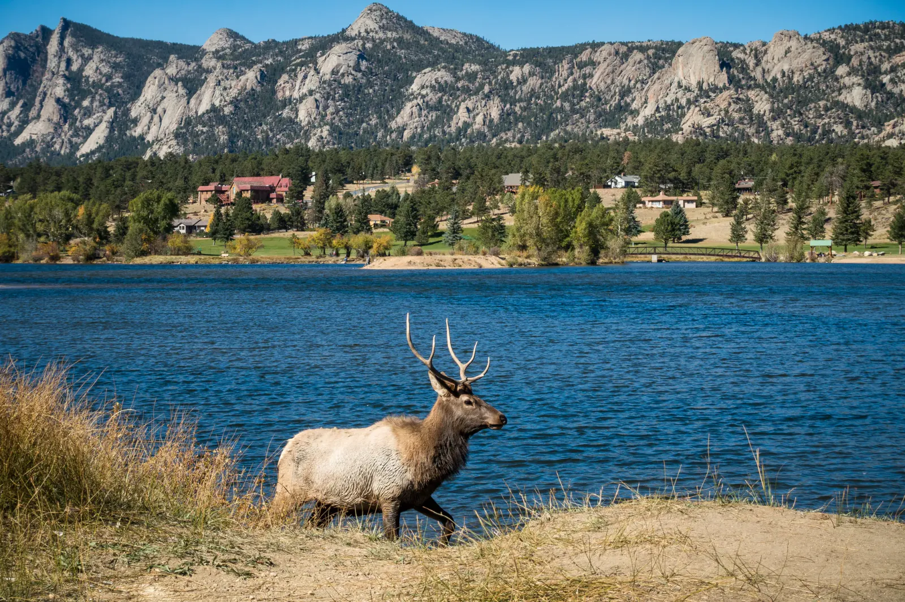

Antlers and Embers
At the end of September, Estes Park belongs to the elk. It's the rut, when bulls gather harems of cows, bugle at their rivals and go wherever they please. I found them wading into the lake and grazing across the town ball field, as if the game had been called on account of elk! The National Park Service asks visitors to stay at least 75 feet back, about two bus lengths, because a bull in the rut is not in a sharing mood. This was the last stop of our honeymoon, and it felt right to end it somewhere this wild. We spent the evening at the Stanley Hotel (yes, the one that inspired The Shining), watching the sky turn pink over the peaks from the balcony.
The next morning we headed up the Bear Lake corridor in Rocky Mountain National Park. I knew the park from a December visit, so seeing it in autumn felt like discovering a different place. Gold had settled into the willows and aspens along the trail, and a thin haze of wildfire smoke softened the ridges. Dream Lake was calm beneath Hallett Peak's broad granite face, with a gnarled pine gripping the rocks at the water's edge. Emerald Lake sits higher still, in a rocky bowl. Across the valley, Longs Peak, the park's only 14,000-foot peak, rose out of the haze. Lower down, a stream tumbled over boulders, and farther along, aspens lined a dry creek bed with their leaves scattered across the stones.


By sunset the whole valley was glowing. Smoke had reduced the sun to a small blood-orange disc, and beams of light fanned out across a golden meadow and a lone pine. Elk dotted the far side, still grazing. Colorado saved its strangest light for last. 2020 turned out to be the worst fire season in the state's recorded history, so I'm still not sure whether to call that sunset beautiful or worrying. I'll say both.